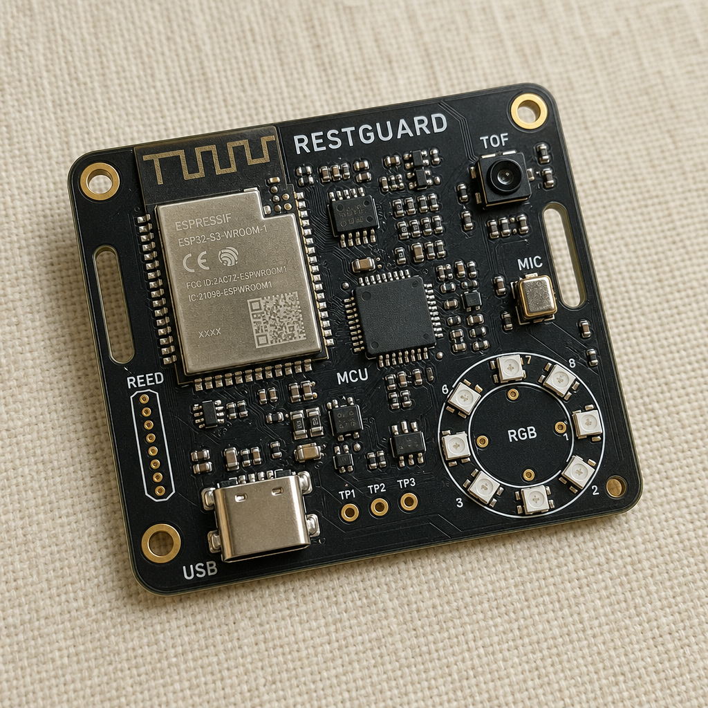
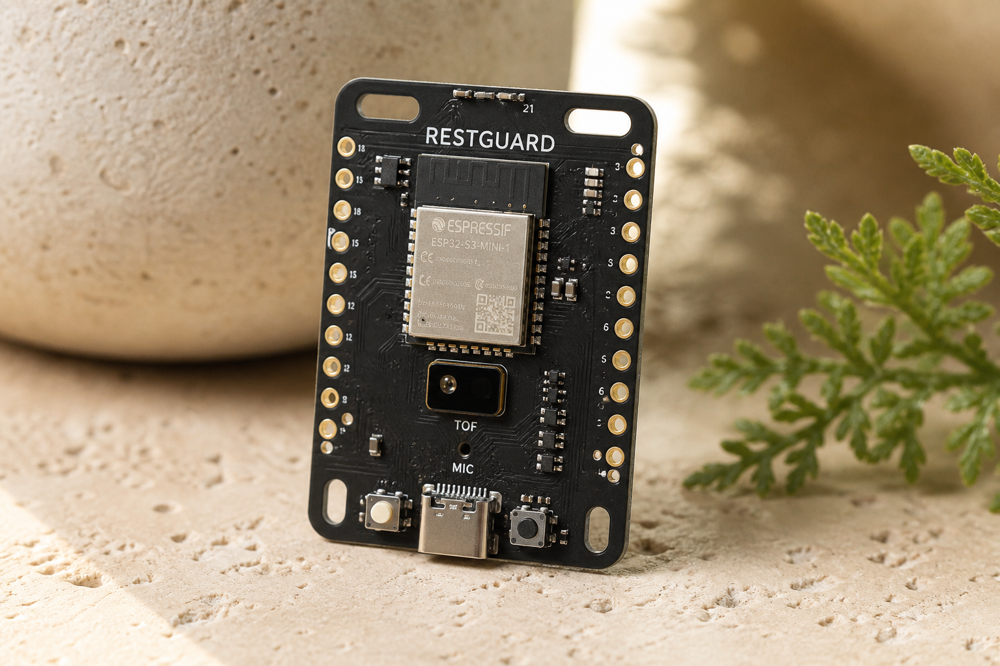
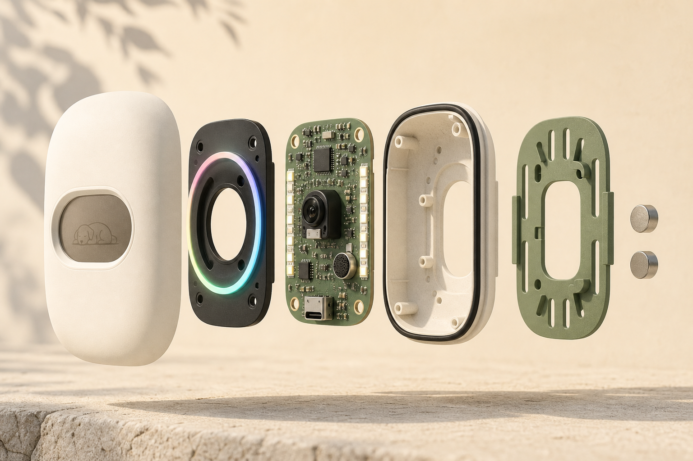
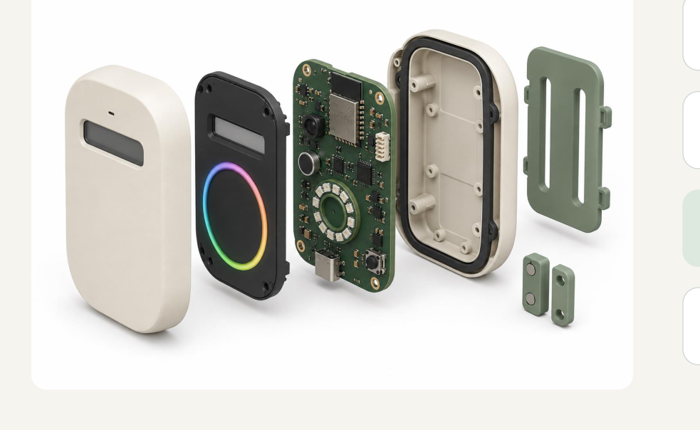

Front + bezel
Protects display and optics. Mic port, optical window, light pipe.
Hardware object / Functional prototype
Before the cream shell goes on a wall, the system has to prove three sensors can share a clock. The first object is a Tracer-like assembled board: dense, strap-able, honest.

Specification · bench board
| Controller | ESP32-S3 development class · later custom PCB |
|---|---|
| Presence | VL53L1X ToF, limited to local visitor zone |
| Sound | Digital MEMS microphone, RMS summaries |
| Door | External reed switch + magnet |
| Outputs | RGB status ring, small monochrome e-paper, staff button |
| Power | USB-C · no permanently sealed battery in concept 1 |
| Enclosure target | 100 × 70 × 30 mm, recycled ABS/PC, matte |
| Privacy | No camera · no raw audio stored or transmitted |

Mechanical stack
Front shell, dark sensor bezel and light pipe, electronics, gasket, rear shell, sage mounting plate, magnets. Component size still needs CAD tolerance checks.

Protects display and optics. Mic port, optical window, light pipe.
Sensing, processing, ring, USB. Custom PCB only after bench placement is proven.
Replaceable plate so one brain fits more than one enclosure geometry.

From the portfolio boards
USB-C on the bottom edge. Recessed staff button. No exposed edge or wire inside the animal space. Tool-accessed rear cover. That is requirement R5 and R8, not decoration.
How the four prototype levels split the risk